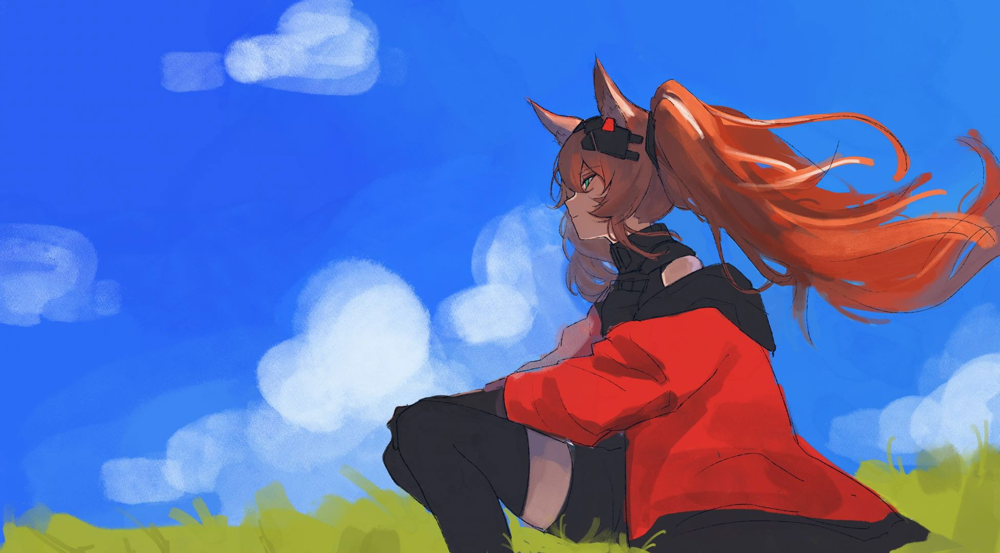
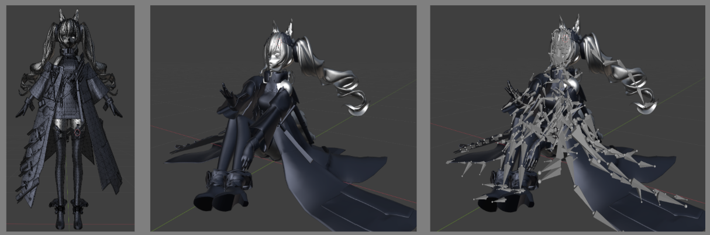
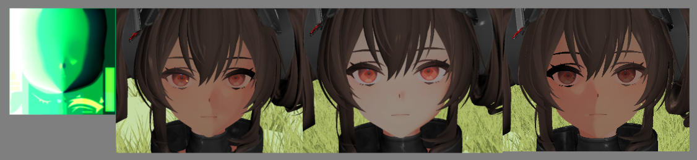
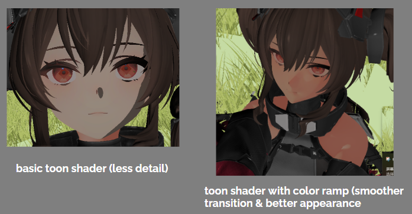
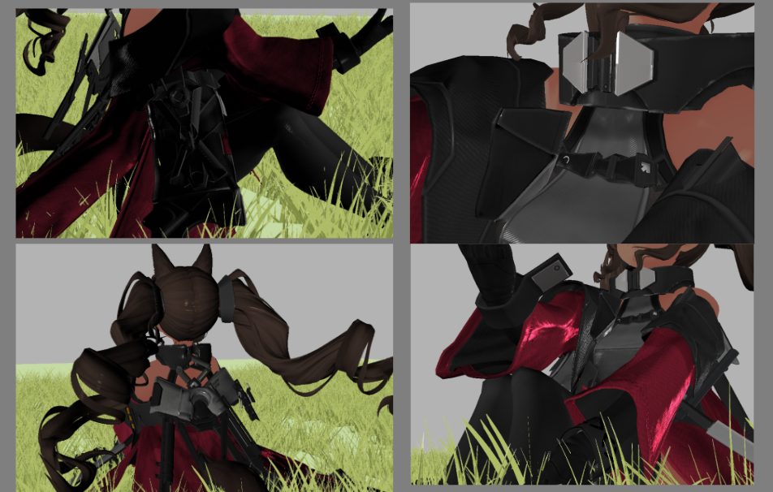
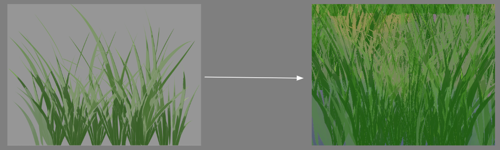
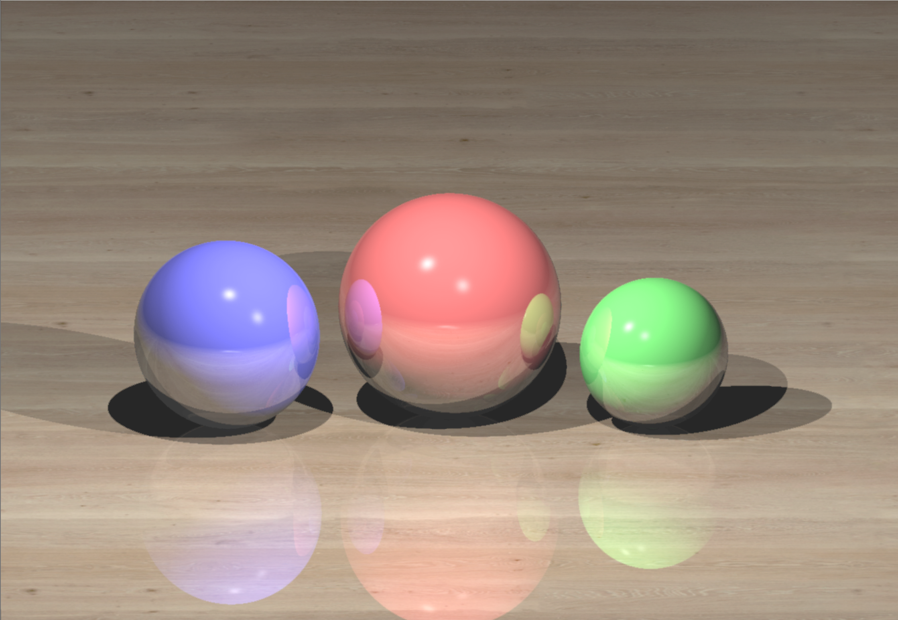
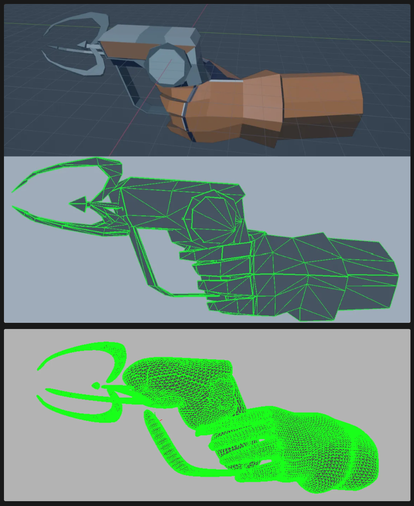

- An 3D Scene made during spring semester 2024 at Georgia Institute of Technology -
Demo Video
About The Project
My Role: Team Lead, Programmer, Designer
Tools: C++, GLSL
Genre: 3D Scene
Timeline: 2 weeks
Team Size: 3
Using C++ and GLSL, we made a 3D scene of a girl, Angelina, sitting on a hill with grass, water,
and a skybox, all rendered in an anime-style aesthetic. As the team leader, I was specifically in
charge of the skybox and character.
This project was created with other two students: Xuanhan Zhou (Programmer), Lining Song (Programmer).
My Contribution
Initial Concept Sketch

Initial Concept Sketch
I created the initial concept sketch to guide the project's direction.
I drew the skybox in Photoshop and integrated it into the project by transformation of texture.
Character Rigging and Integration

Downloaded model (left); posed model (right)
Even though the model came with an initial rig, I improved and edited the rigging using Blender to fit our project. I also posed the character using Blender.
Next, I standardized the origin location and imported each body part into the project as independent components to apply unique shaders to each part.
SDF Mapping and Toon Shading for face and skin

SDF map (left); Shape of Shadow on Face using SDF (right)

Basic Toon Shading Compare to Toon Shading with Color Ramp
I implemented my own shader for the face by combining SDF mapping and toon shading with color bands, achieving a polished anime-style aesthetic.
SDF map defines the shape of shadow with one light (instead of relying on light interaction with the geometric mesh object) to create a 2D cartoon shading effect on the face.
Toon shading converts complex lighting into a range of colors sampled from a color band. A color ramp is used to map colors across the gradient, defining transitions between color bands.
Color tuning is used to ensure light and shadow relations appear more aesthetically pleasing.
Cloth Texture Shading

Cloth Shading with Normal Map
Grass

Grass Texture (Down Left); Billboard of Multiple Grass Texture (Down Right)
I collaborated with my teammates on grass and terrain generation.
Each blade of grass was rendered as a billboard with a grass texture,
and we combined multiple billboards at rotated angles to mimic 3D grass clusters.
To simulate wind motion with height dependency, we animated the billboards using
FBM noise in the vertex shader.
Other Projects
This is the final project for the class CS3451 Computer Graphics, here are more cool stuff I did in this class :) Everything is done in C++ and GLSL
Sunset in Shanghai, video created using shader

Ray Tracing Alogorithm
Loop Subdivision Algorithm

Using the Subdivision Algorithm on a Low-poly Model Made for the Game, Equinox